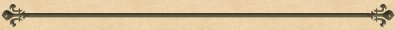

|
Ben Garvey's Homepage - Clan McQueen (logon & password required)

Bernadine Bleckis (F)
d. 05 Mar 1989
Bernadine Bleckis died on 5 March 1989.
|
Isabella Davidson (F)
b. 1830
Pop-up Pedigree
Isabella Davidson was born in 1830 at Quebec County, Quebec Province, Canada.
She was the daughter of William Davidson and Elizabeth Art.
Isabella Davidson was enumerated in the 1851 Census of Valcartier, Quebec County, Quebec Province, Canada as the daughter of Elizabeth Art. She was 21 years old and listed as Protestant.1
The estimated date of marriage for Isabella Davidson and Patrick Cosgrove is in 1854 at Quebec Province.
|
- Children of Isabella Davidson and Patrick Cosgrove:
- Mary Cosgrove (1855)
James Cosgrove (1857)
John Cosgrove (1859)
Isabella Cosgrove (1867)
- [S117] "Census of Canada", 1851, Elizabet Art Davidson HOUSEHOLD, Janice Copeman Extract. (FHL film http://www.genealogy.com/users/c/o/p/Janice-L-Copeman/FILE/0013text.txt).
Deborah (?) (F)
b. 1826
Deborah (?) was born in 1826 at L. Canada.1
The estimated date of marriage for Deborah (?) and Robert Davidson is in 1855.1
Deborah was enumerated in the census of 1861 as head of a household consisting of his wife Deborah, son, James and daughters Matilda and Elizabeth. He was a farmer and living in a frema house. His religion was listed as Anglican.. At the time of this census the family was living on a farm in Valcartier, Quebec County, Quebec Province, Canada.1
Deborah (?) was enumerated in the 1881 Census of St. Gabriel West, Quebec County, Quebec Province, Canada as the spouse of Robert Davidson. She was 43 and listed as belonging to the Church of England.2
|
- Children of Deborah (?) and Robert Davidson:
- James Davidson (1856)
Matilda Davidson (1858)
Elizabeth Davidson (1859)
Gabriel Davidson (1861)
William Davidson (1863)
Edith Davidson (1866)
Robert Davidson (1869)
Lily Davidson (1872)
- [S116] "Census of Canada", 1861, Robert Davison household HOUSEHOLD, Janice Copeman Extraction. (FHL film http://www.genealogy.com/users/c/o/p/Janice-L-Copeman/FILE/0016page.html).
- [S118] "Census of Canada", 1881, Robert Davidson household HOUSEHOLD, http://www.familysearch.org/Eng/Search/frameset_search.asp?PAGE=census/search_census.asp. (FHL film unknown cd4).
James Davidson (M)
b. 1856
Pop-up Pedigree
James Davidson was born in 1856 at L. Canada.
He was the son of Robert Davidson and Deborah (?).
James Davidson was enumerated in the 1861 Census of Valcartier, Quebec County, Quebec Province, Canada as the son of Robert Davidson. He was a child of 5 years.1
James Davidson was enumerated in the 1881 Census of St. Gabriel West, Quebec County, Quebec Province, Canada as the son of Robert Davidson. He was 26 years of age and belonged to the Church of England.2
|
- [S116] "Census of Canada", 1861, Robert Davison household HOUSEHOLD, Janice Copeman Extraction. (FHL film http://www.genealogy.com/users/c/o/p/Janice-L-Copeman/FILE/0016page.html).
- [S118] "Census of Canada", 1881, Robert Davidson household HOUSEHOLD, http://www.familysearch.org/Eng/Search/frameset_search.asp?PAGE=census/search_census.asp. (FHL film unknown cd4).
Matilda Davidson (F)
b. 1858
Pop-up Pedigree
Matilda Davidson was born in 1858 at L. Canada.
She was the daughter of Robert Davidson and Deborah (?).
Matilda Davidson was enumerated in the 1861 Census of Valcartier, Quebec County, Quebec Province, Canada as the daughter of Robert Davidson. She was a child of 3 years.1
Matilda Davidson was enumerated in the 1881 Census of St. Gabriel West, Quebec County, Quebec Province, Canada as the daughter of Robert Davidson. He was 26 years of age and belonged to the Church of England.2
|
- [S116] "Census of Canada", 1861, Robert Davison household HOUSEHOLD, Janice Copeman Extraction. (FHL film http://www.genealogy.com/users/c/o/p/Janice-L-Copeman/FILE/0016page.html).
- [S118] "Census of Canada", 1881, Robert Davidson household HOUSEHOLD, http://www.familysearch.org/Eng/Search/frameset_search.asp?PAGE=census/search_census.asp. (FHL film unknown cd4).
Elizabeth Davidson (F)
b. 1859
Pop-up Pedigree
Elizabeth Davidson was born in 1859 at L. Canada.
She was the daughter of Robert Davidson and Deborah (?).
Elizabeth Davidson was enumerated in the 1861 Census of Valcartier, Quebec County, Quebec Province, Canada as the daughter of Robert Davidson. She was a child of 2 years.1
Elizabeth Davidson was enumerated in the 1881 Census of St. Gabriel West, Quebec County, Quebec Province, Canada as the daughter of Robert Davidson. She was 12 years old and belonged to the Church of England.2
|
- [S116] "Census of Canada", 1861, Robert Davison household HOUSEHOLD, Janice Copeman Extraction. (FHL film http://www.genealogy.com/users/c/o/p/Janice-L-Copeman/FILE/0016page.html).
- [S118] "Census of Canada", 1881, Robert Davidson household HOUSEHOLD, http://www.familysearch.org/Eng/Search/frameset_search.asp?PAGE=census/search_census.asp. (FHL film unknown cd4).
Gabriel Davidson (M)
b. 1861
Pop-up Pedigree
Gabriel Davidson was born in 1861 at Quebec, Canada.
He was the son of Robert Davidson and Deborah (?).
Gabriel Davidson was enumerated in the 1881 Census of St. Gabriel West, Quebec County, Quebec Province, Canada as the son of Robert Davidson. He was 19 years old and belonged to the Church of England.1
|
- [S118] "Census of Canada", 1881, Robert Davidson household HOUSEHOLD, http://www.familysearch.org/Eng/Search/frameset_search.asp?PAGE=census/search_census.asp. (FHL film unknown cd4).
William Davidson (M)
b. 1863
Pop-up Pedigree
William Davidson was born in 1863 at Quebec, Canada.
He was the son of Robert Davidson and Deborah (?).
William Davidson was enumerated in the 1881 Census of St. Gabriel West, Quebec County, Quebec Province, Canada as the son of Robert Davidson. He was 17 years old and belonged to the Church of England.1
|
- [S118] "Census of Canada", 1881, Robert Davidson household HOUSEHOLD, http://www.familysearch.org/Eng/Search/frameset_search.asp?PAGE=census/search_census.asp. (FHL film unknown cd4).
Edith Davidson (F)
b. 1866
Pop-up Pedigree
Edith Davidson was born in 1866 at Quebec County, Quebec Province, Canada.
She was the daughter of Robert Davidson and Deborah (?).
Edith Davidson was enumerated in the 1881 Census of St. Gabriel West, Quebec County, Quebec Province, Canada as the daughter of Robert Davidson. She was 14 years old and belonged to the Church of England.1
|
- [S118] "Census of Canada", 1881, Robert Davidson household HOUSEHOLD, http://www.familysearch.org/Eng/Search/frameset_search.asp?PAGE=census/search_census.asp. (FHL film unknown cd4).
Robert Davidson (M)
b. 1869
Pop-up Pedigree
Robert Davidson was born in 1869 at Quebec County, Quebec Province, Canada.
He was the son of Robert Davidson and Deborah (?).
Robert Davidson was enumerated in the 1881 Census of St. Gabriel West, Quebec County, Quebec Province, Canada as the son of Robert Davidson. He was 11 years old and belonged to the Church of England.1
|
- [S118] "Census of Canada", 1881, Robert Davidson household HOUSEHOLD, http://www.familysearch.org/Eng/Search/frameset_search.asp?PAGE=census/search_census.asp. (FHL film unknown cd4).
Lily Davidson (F)
b. 1872
Pop-up Pedigree
Lily Davidson was born in 1872 at Valcartier, Quebec County, Quebec Province, Canada.
She was the daughter of Robert Davidson and Deborah (?).
Lily Davidson was enumerated in the 1881 Census of St. Gabriel West, Quebec County, Quebec Province, Canada as the daughter of Robert Davidson. She was a child of 8 years; his wife, Deborah, sons James, Gabriel, William and Robert, and daughters Matilda, Elizabeth, Edith and Lily. He was age 63 and a farmer belonging to the Church of England.1
|
- [S118] "Census of Canada", 1881, Robert Davidson household HOUSEHOLD, http://www.familysearch.org/Eng/Search/frameset_search.asp?PAGE=census/search_census.asp. (FHL film unknown cd4).
Patrick Cosgrove (M)
b. 1826
Patrick was enumerated in the census as head of a household consisting of Source Information:
Census Place Ste-Gabriel West, Quebec, Quebec
Family History Library Film 1375848
NA Film Number C-13212
District 80
Sub-district J
Page Number 4
Household Number 16
. At the time of this census the family was living at.
He was born in 1826 at Ireland.
The estimated date of marriage for Patrick Cosgrove and Isabella Davidson is in 1854 at Quebec Province.
|
- Children of Patrick Cosgrove and Isabella Davidson:
- Mary Cosgrove (1855)
James Cosgrove (1857)
John Cosgrove (1859)
Isabella Cosgrove (1867)
James Cosgrove (M)
b. 1857
Pop-up Pedigree
Mary Cosgrove (F)
b. 1855
Pop-up Pedigree
John Cosgrove (M)
b. 1859
Pop-up Pedigree
Isabella Cosgrove (F)
b. 1867
Pop-up Pedigree
Ellen Corcoran (F)
b. 31 Jan 1906, d. 28 Mar 2002
Pop-up Pedigree
Appears on charts:
Descendant Chart for Patrick Corcoran
(?) Houlihan (M)
Nicholas Terry (M)
b. 1860, d. 08 Dec 1945
Nicholas Terry was born in 1860 at Ireland.
Nicholas married Margaret McDonough.
Nicholas Terry died on 8 December 1945 at Chicago, Cook County, Illinois, United States of America.
|
- Child of Nicholas Terry and Margaret McDonough:
- Irene Terry+ (11 Aug 1903 - 18 Sep 1970)
Margaret McDonough (F)
b. 28 Oct 1862, d. 18 Apr 1946
Margaret McDonough was born on 28 October 1862 at Ireland.
Margaret married Nicholas Terry.
Margaret McDonough died on 18 April 1946 at Chicago, Cook County, Illinois, United States of America, at age 83.
|
- Child of Margaret McDonough and Nicholas Terry:
- Irene Terry+ (11 Aug 1903 - 18 Sep 1970)
Jamie Haley's Cookie Cottage
|